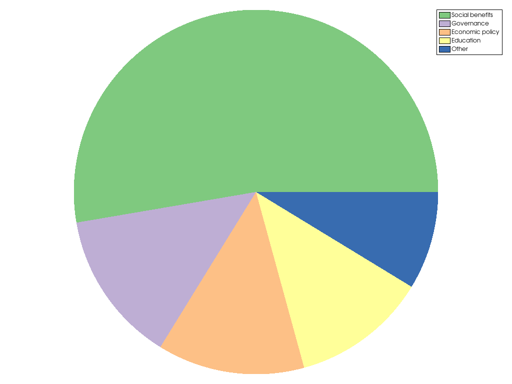

pyvista.plotting.charts.PiePlot#
- class PiePlot(chart, data, colors=None, labels=None, *, _wrap=None)[source]#
Class representing a pie plot.
Users should typically not directly create new plot instances, but use the dedicated
ChartPieclass.- Parameters:
- chart
ChartPie The chart containing this plot.
- dataarray_like
Relative size of each pie segment.
- colors
listortupleofColorLike,optional Color of the segments drawn in this plot. Any color parsable by
pyvista.Coloris allowed. If omitted (None), the default color scheme is used.- labels
listortupleofstr, default: [] Label for each pie segment drawn in this plot, as shown in the chart’s legend.
- chart
- Other Parameters:
- _wrap
vtk.vtkPlotPie,optional Wrap an existing VTK PlotPie instance (no wrapping when
None).
- _wrap
Examples
Create a pie plot showing the usage of tax money.
>>> import pyvista >>> x = [128.3, 32.9, 31.8, 29.3, 21.2] >>> l = ["Social benefits", "Governance", "Economic policy", "Education", "Other"] >>> chart = pyvista.ChartPie(x, labels=l) >>> chart.show()
 Methods
Toggle the plot's visibility.
PiePlot.update(data)Update the size of the pie segments.
Attributes
Brush object controlling how shapes in this plot are filled.
Return or set the plot's color.
Return or set the plot's color scheme.
Return or set the plot's colors.
Retrieve the sizes of the drawn segments.
Return or set the this plot's label, as shown in the chart's legend.
Return or set the this plot's labels, as shown in the chart's legend.
Return or set the line style of all lines drawn in this plot.
Return or set the line width of all lines drawn in this plot.
Pen object controlling how lines in this plot are drawn.
Return or set the this plot's visibility.